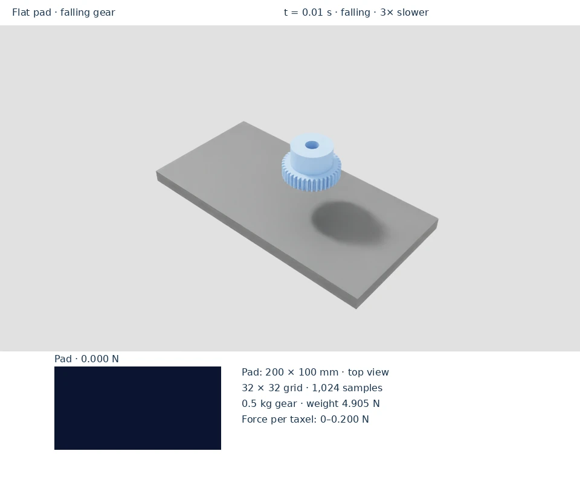
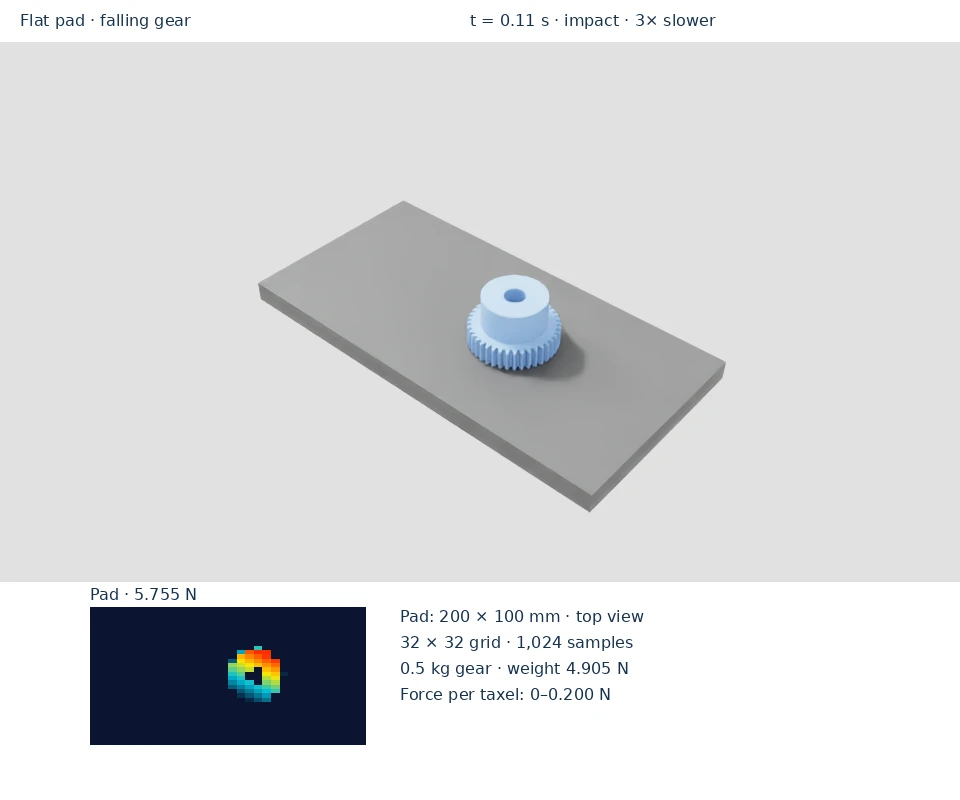

Falling-object contact
A 0.5 kg gear falls onto a flat pad with a 32 × 32 sampling grid. Contact creates a footprint, and the total normal force approaches the gear’s 4.905 N weight as it settles.



Run the example
From the repository root in the installed environment:
python scripts/simple_example.py
The object resets every 100 simulation steps; the scene repeats until closed. Sampling markers are visible by default. For a bounded run without a window:
python scripts/simple_example.py --headless --max-steps 120
Read the tactile output
The heatmap is a top view of the 200 × 100 mm pad, shown at its physical 2:1 aspect ratio. Columns follow the long axis and rows the short axis. The footprint changes during impact, then steadies as the gear settles. Resetting the gear unloads the pad.
The console prints peak force per taxel and total normal load. Expect the settled total to approach 4.905 N; impact readings can be higher. See display colors and units.
For quantitative checks on the curved DEX-01 fingertip, use the separate known-load validation. To compare this grid with other layouts, see taxel patterns.